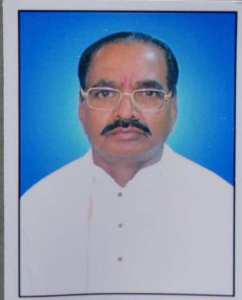
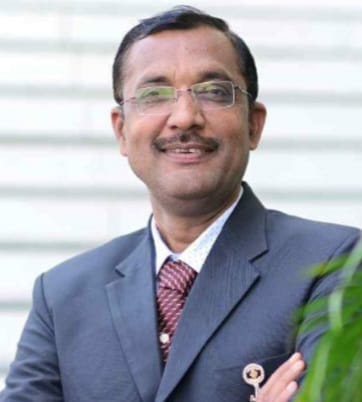
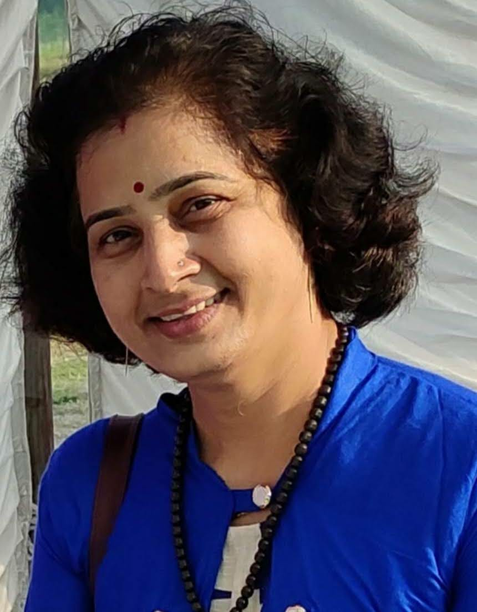
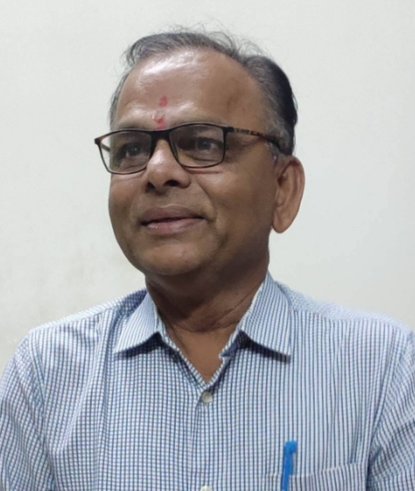
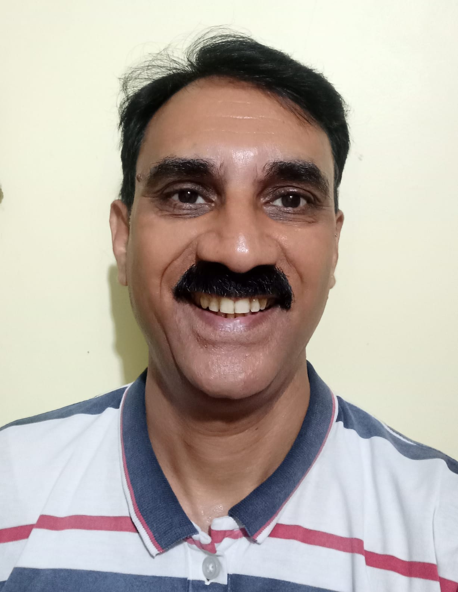
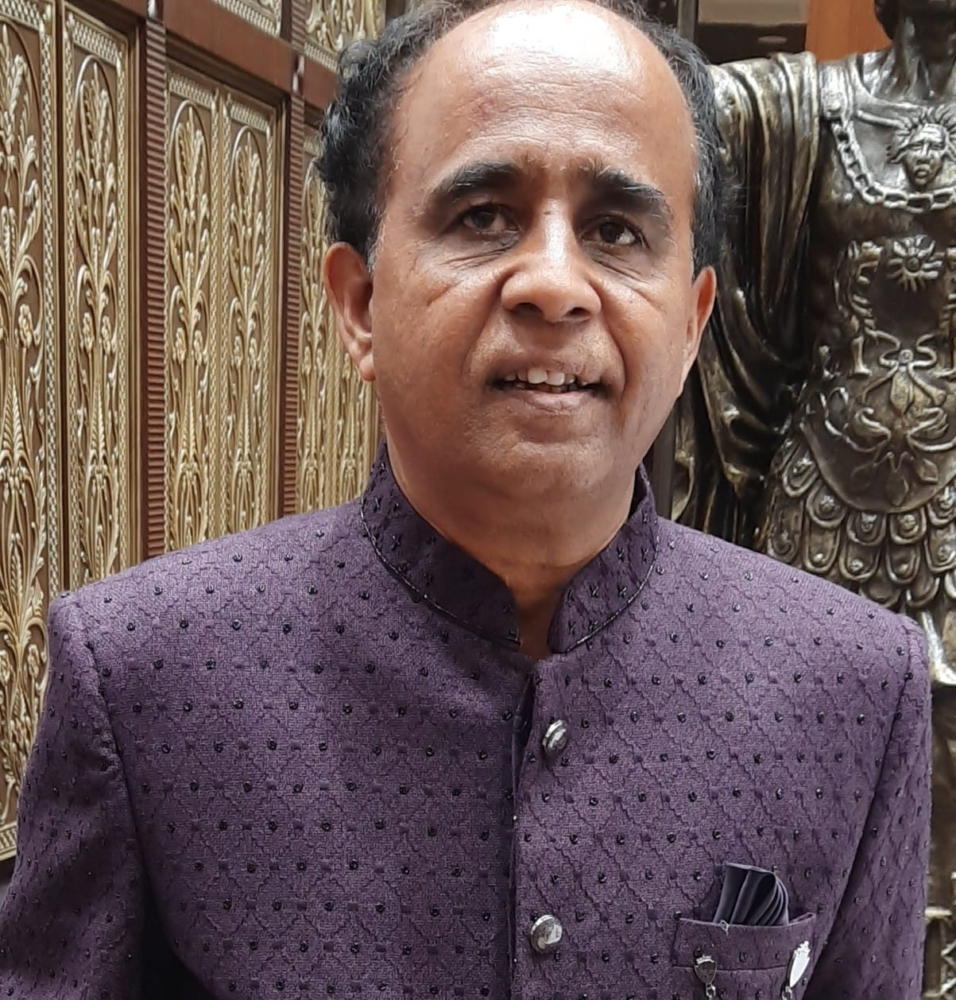
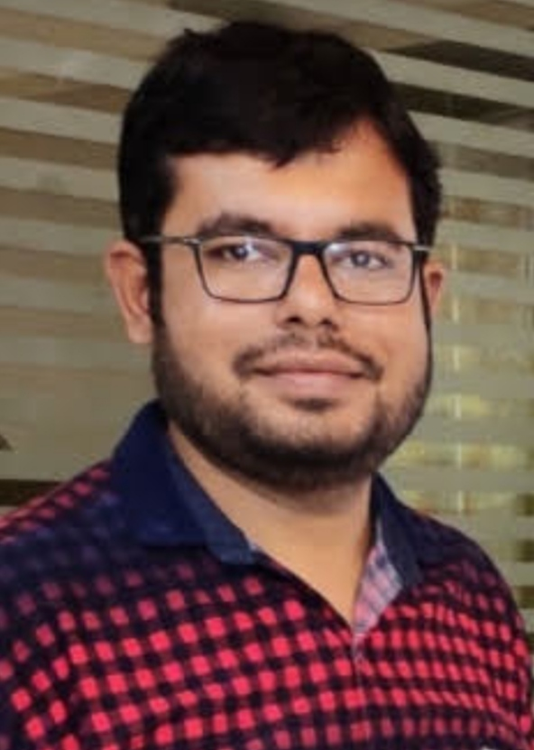
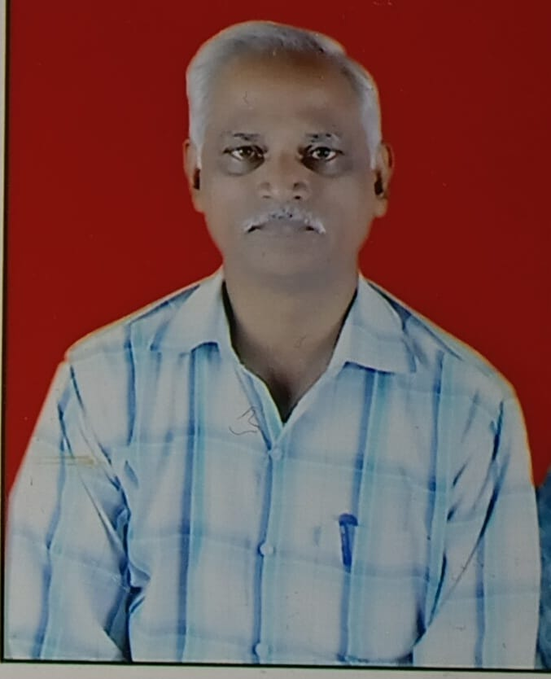
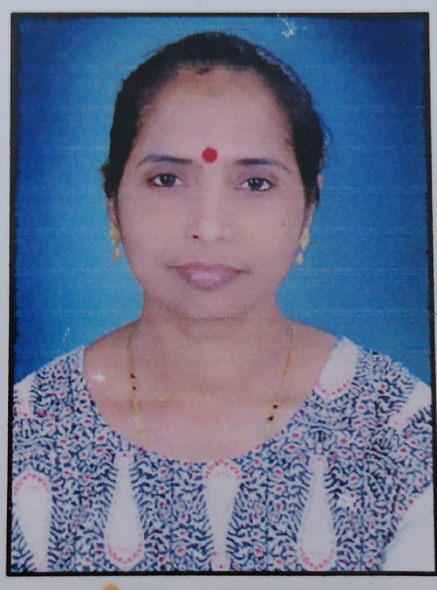

Contact Details & Social Media
Our Core Mission
Dr. Manisha Paliwal and Dr. Yogesh Paliwal are homeopathic doctors who are deeply dedicated environmental enthusiasts. They have established a large-scale initiative to eradicate single-use plastic from society. In 2025, they launched the "Plastic Disposable-Free Maharashtra Campaign", which brought about a massive revolution in a short span of time. The campaign is achieving unprecedented success in waste management and in stopping plastic waste before it even reaches the ground.
The Inspiring Journey
In 2003, Dr. Manisha Paliwal was diagnosed with a very serious illness called 'Multiple Sclerosis'. During this challenging journey, she lost her eyesight three times and recovered it, and experienced severe paralysis-like symptoms in her body six times. However, through sheer willpower and correct treatments, she successfully overcame the disease.
While studying this disease deeply, she realized that global warming and rising pollution are the root causes behind such severe human health complications. Driven by the noble thought that other innocent citizens should not have to endure the life-threatening pain she experienced, she started a direct on-road campaign against plastic.
Initially, whenever she noticed anyone carrying a plastic bag on the street, she would stop them and request them not to use it. Back then, some people would look at her with anger and give rude replies like "Don't teach us wisdom, go tell the government to ban it first," while others would say affectionately, "You are right, but right now we don't have a cloth bag, how do we carry vegetables? We have no choice."
To find a permanent and practical solution to this problem, she started sewing bags out of old fabrics (sarees, bedsheets, curtains) right at her home and began distributing them to people for free upon request.
Key Milestones
The following significant figures have been achieved up to May 31, 2026, through this ongoing and continuous work:
1. वृक्ष संस्कार अभियान | सीड बँक व प्लॅस्टिक बँक
Seed Bank: Collecting fruit seeds consumed at home instead of throwing them into the garbage.
Plastic Bank: Collecting plastic pouches of milk, oil, salt, and other groceries instead of tossing them in the trash.
Thick plastic packets are filled with soil, the collected seeds are planted inside, and they are watered daily to grow thousands of saplings. Since 2011, during the annual Sankranti Haldi-Kumkum ceremony, Dr. Manisha distributes these home-grown potted saplings and cloth bags as a traditional gift (Waan).
2. Zero Budget Prosperity
Multi-beneficial fruit trees like Mango, Papaya, Jamun, Custard Apple, Bullock's Heart, Chikoo, and Drumstick grown through the Seed and Plastic Banks are distributed to needy farmers completely free of cost. These trees, raised at absolute zero cost, provide farmers with a highly profitable intercrop in their fields, making their economic prosperity easily achievable.
"आधी बीज एकले, एका बीजापोटी, तरु कोटी कोटी जन्मले"
"प्रत्येक बीजाला रुजण्याची संधी मिळाली पाहिजे. ते जगते की नाही हे निसर्गावर सोडून द्यायचं!"


Plastic Disposable-Free Akola Campaign
Launched in 2025 with just 300 plates, glasses, and spoons, this initiative received an overwhelming response from the residents of Akola. The organization provides utensils free of charge to prevent disposable waste generated during domestic functions or public feasts (Bhandaras). Our policy is: "The money that was meant to be spent on buying disposables should instead be given to the local workers who clean the steel utensils after the event", which prevents pollution and generates local employment for the underprivileged.
Currently, the organization's central bank owns 1,100 plates, 1,000 glasses, 250 tea cups, 200 snack plates, and 800 spoons. Driven by this inspiration, this sustainable philosophy has reached over 120 villages, including Satara, Washim, Parbhani, Mumbai, Thane, Palghar, Mahableshwar, and Belagavi (Karnataka).
Health Advisory & Public Awareness
To promote environmental protection and personal wellness, this couple uses bicycles in their daily life. Every morning, they step out on a special Tandem bicycle. Along the way, they stop citizens carrying plastic bags, present them with a cloth bag, and educate them. Furthermore, public awareness placards are installed on their bicycles, scooters, and outside their house. They have distributed over 200 such awareness placards to local vegetable vendors completely free of charge.
They regularly organize awareness campaigns on the harmful effects of plastic and the crucial importance of environmental conservation. They also visit numerous schools to guide students. In 2024, Dr. Manisha Paliwal formed a formal group under the name MY वसुधा विकास to bring like-minded individuals together to scale this impactful work.
Our Core Mentors
We are immensely guided by the wisdom, support, and vision of our honorable mentors:

Mr. Jayprakash Patil
Guiding Pillar & Strategic Advisor

Dr. Mahesh Dabare
Visionary Guide & Community Mentor

Mr. Dinesh Badgujar
Dedicated Pillar & Strategic Mentor
Our Team Leadership
Following the heartfelt insistence of all companions and robust public participation, MY वसुधा विकास was formally registered in 2026. The main office bearers and executive body managing the operations are as follows:

Dr. Manisha Yogesh Paliwal
Homeopathic Expert, Environmentalist & Chief Promoter

Dr. Dinkar Deshmukh
Senior Advisor & Organizational Strategist

Dr. Yogesh Paliwal
Homeopathic Expert, Environmentalist & Nature Protector

Mr. Sanjay Paliwal
Steadfast Companion Providing Financial & Moral Support Since Inception

Mr. Rakesh Paliwal
Strong Pillar of Support Exerting Immense Efforts Through Challenging Times

Mr. Bharat Patel
Volunteer with social mindset

Mrs. Ujjwala Badgujar
Volunteer with social mindset
"प्लॅस्टिक कॅरीबॅग ची सवय सोडा, जीवनाशी नाते जोडा"
"झाडे लावा, झाडे जगवा | वृक्ष = मोक्ष"
"झाडे लावा आजच.. नाही तर भविष्यत भराल ऑक्सिजन कर!"
"एक पौधा (पेड़) जरूर लगाएं, जिससे अगली पीढ़ी सांस ले पाएँ।"
"प्लास्टिक कॅरी बॅग की आदत छोडो, जिंदगी से नाता जोडो"
"एक पेड़/पौधा जरूर लगाएं जिससे अगली पीढ़ी सांस ले पाएं"
"असेल फळा फुलांची संगत तरच, जीवनात येईल रंगत"
"प्रत्येक गोष्टीला शासनच का जबाबदार? आपण कधी होणार समजूतदार?"